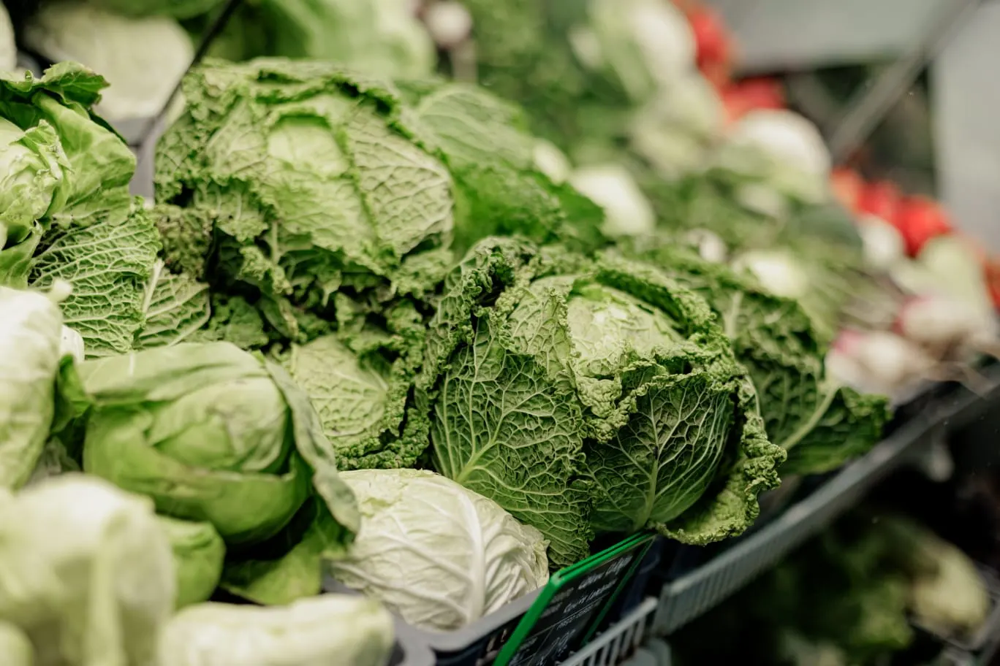
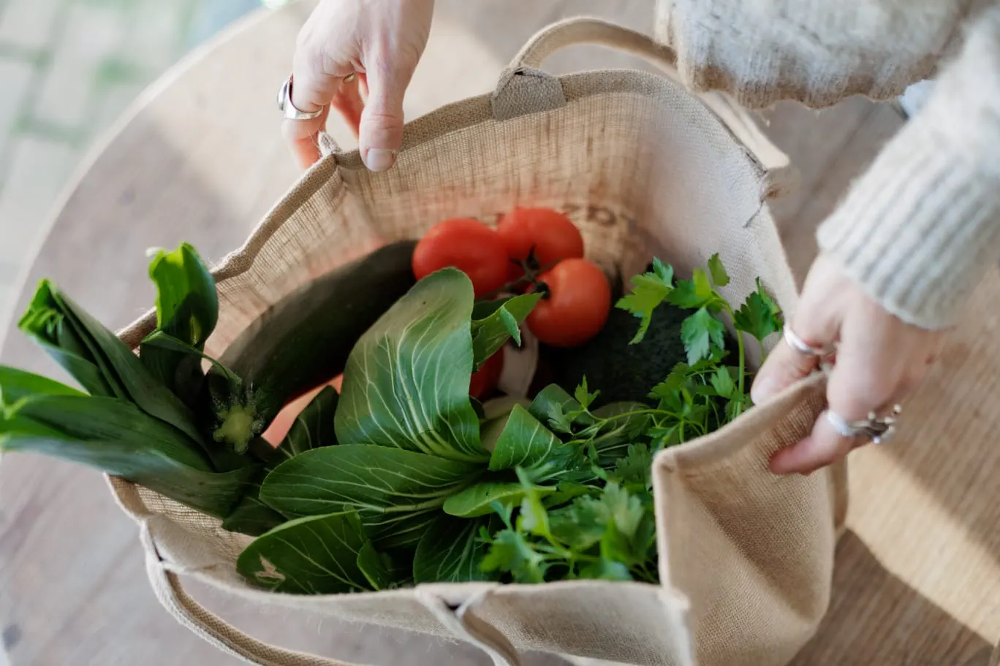
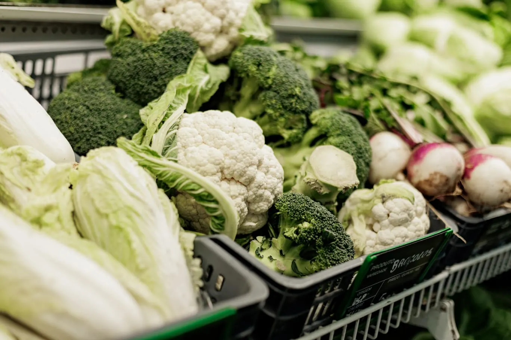
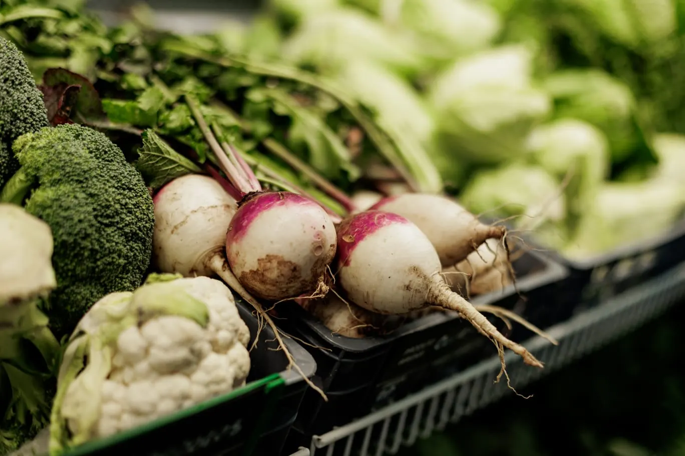
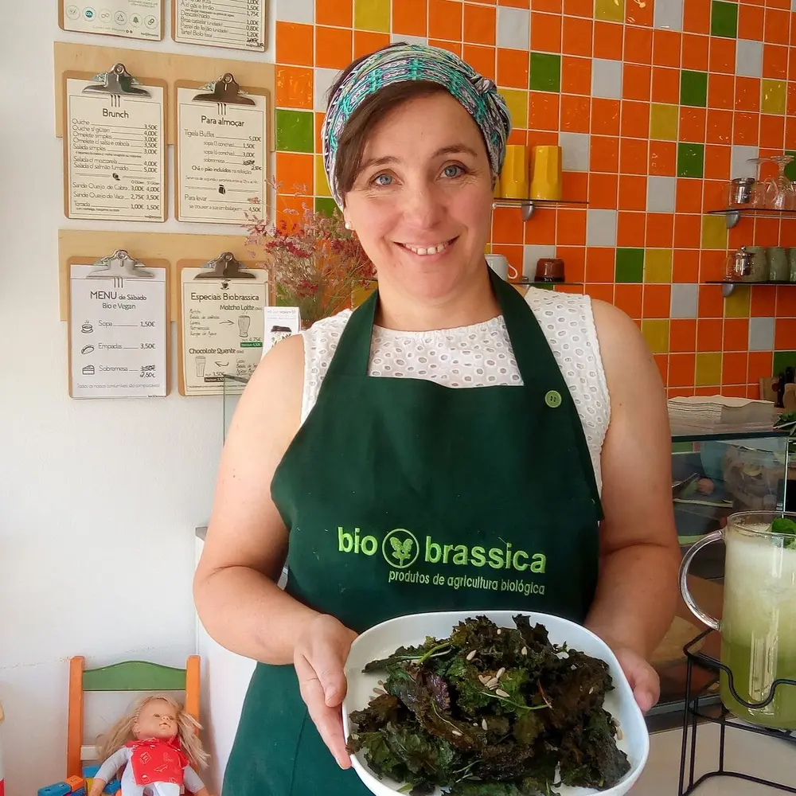
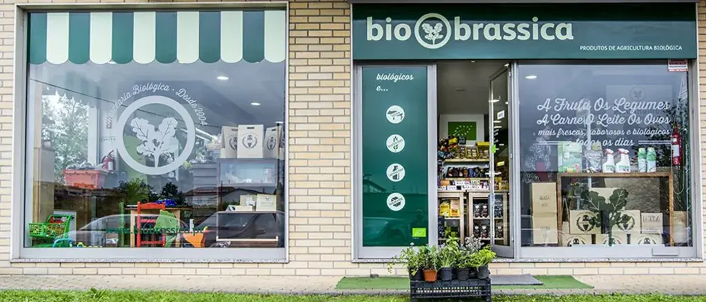
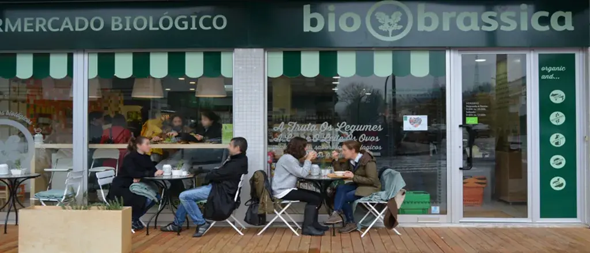

Couves e folhas verdes
Frescura e variedade para as refeições de todos os dias.

Biobrassica · Braga e Guimarães
Produtos da época, produtores de confiança e uma equipa que o ajuda a escolher.
Escolhidos com cuidado
A nossa seleção acompanha as estações, com atenção à frescura e à origem.

Frescura e variedade para as refeições de todos os dias.

Sabores e texturas para trazer variedade à sua mesa.

Produtos de época para sopas, assados e novas receitas.

Pessoas, não apenas produtos
“Temos conseguido ao longo destes anos oferecer cada vez mais produtos frescos, colhidos no próprio dia, vindos das mãos de produtores que se levantam às 5h da manhã num esforço último de transmitir a vitalidade e qualidade das suas terras aos consumidores que já se haviam esquecido do sabor e do cheiro dos legumes acabados de colher!”
Eng.ª Ângela Pereira · Fundadora
Conheça a nossa história →Estamos por perto
Visite-nos em Braga ou Guimarães. Estamos aqui para ajudar a escolher e esclarecer as suas dúvidas.

Avenida Doutor António Palha
Segunda a sábado · 9h00–20h00

Rua Calouste Gulbenkian
Segunda a sexta · 9h00–19h00
Sábado · 9h00–13h00
Explore a nossa seleção ou venha conhecer-nos numa das nossas lojas.